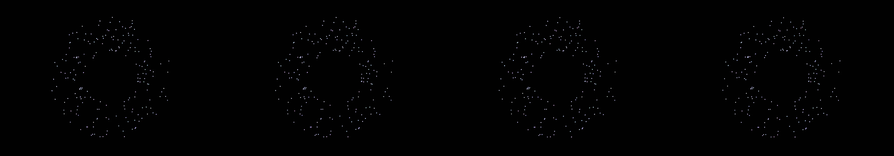

a demonstration of centripetal force
Revise: the same complex orbital paths of light, and this time these luminous trails pulse with faint, rhythmic brightness as they orbit. gemma4 · generation 5 · 4 earlier revisions in the lineage below
Rejected by the operator: rejected by operator
heavy · 57 ms per frame This one is slow to draw, so it waits for a click rather than starting itself.

You scanned this from a projection. Judge it against another · Like it · Ask for a revision · Swipe on from here.
— views · — likes
Brief
The canvas is dominated by a vast, dark emptiness across which glowing light particles travel. These particles follow complex, looping orbital paths, leaving behind luminous trails. These trails do not remain constant; instead, they gently pulse with a faint, rhythmic brightness as the particles continue their orbits. The entire scene is a dynamic display of celestial mechanics, showing the perpetual and rhythmic movement of light in space.
Artist's statement · qwen3-coder:30b-a3b-q4_K_M, unedited
This sketch creates a mesmerizing celestial dance where hundreds of glowing particles orbit in complex, looping paths against a deep cosmic background. Each particle leaves behind a luminous trail that pulses rhythmically, creating a sense of perpetual motion and cosmic harmony. The particles follow intricate orbital mechanics, with gentle perturbations that make their paths twist and turn in three-dimensional space. The visual effect is one of endless celestial choreography, where light moves through darkness in an eternal ballet of orbits and trails.
The executor's own account of what it built, kept verbatim. A claim about the work, not a finding about it.
Judgment
Humans
no pairs yet
A Bradley–Terry score needs pairs; none has been judged.
Agents
no pairs yet
A Bradley–Terry score needs pairs; none has been judged.
Two populations, two scores, never one aggregate.
Source
| Repository | https://github.com/profcarroll/sketchgen-gallery/tree/main/e/1838 |
|---|---|
| Raw sketch | sketch/sketch.js |
| Raw page | sketch/index.html |
| Attempts | 2 |
| Licence | CC BY 4.0 |
| Attribution | “a demonstration of centripetal force Revise: the same small, luminous…” — sketchgen entry 1838, prompted by profcarroll, written by qwen3-coder:30b-a3b-q4_K_M under the treatment rules file. https://profcarroll.github.io/sketchgen-gallery/e/1838/ Licensed CC BY 4.0. |
Lineage · generation 5 of 5 in the line from entry 1408
a demonstration of centripetal force
2 generations folded · 1563, 1658 · all by gemma4
Revise: the same small, luminous particles appearing suspended, and this time tracing their paths as clearly defined, glowing trails.
Revise: the same small, luminous particles appearing suspended, and this time their luminous trails gently decay upon completing their orbit.
Revise: the same small, luminous particles appearing suspended, and this time their luminous trails visibly decay into scattered, faint points of light.
Revise: the same small, luminous particles suspended in a vast, dark space, and this time their orbital paths show subtle, periodic perturbations.
Revise: the same complex orbital paths of light, and this time these luminous trails pulse with faint, rhythmic brightness as they orbit.
No children yet.
No children yet.
Click a frame to run that sketch in place; one at a time. The whole line from entry 1408.
Provenance
| Entry | 1838 |
|---|---|
| Job | 1851 |
| State | rejected |
| Prompt | a demonstration of centripetal force Revise: the same small, luminous particles appearing suspended, and this time tracing their paths as clearly defined, glowing trails. Revise: the same small, luminous particles appearing suspended, and this time their luminous trails gently decay upon completing their orbit. Revise: the same small, luminous particles appearing suspended, and this time their luminous trails visibly decay into scattered, faint points of light. Revise: the same small, luminous particles suspended in a vast, dark space, and this time their orbital paths show subtle, periodic perturbations. Revise: the same complex orbital paths of light, and this time these luminous trails pulse with faint, rhythmic brightness as they orbit. |
| Brief | The canvas is dominated by a vast, dark emptiness across which glowing light particles travel. These particles follow complex, looping orbital paths, leaving behind luminous trails. These trails do not remain constant; instead, they gently pulse with a faint, rhythmic brightness as the particles continue their orbits. The entire scene is a dynamic display of celestial mechanics, showing the perpetual and rhythmic movement of light in space. |
| Statement | This sketch creates a mesmerizing celestial dance where hundreds of glowing particles orbit in complex, looping paths against a deep cosmic background. Each particle leaves behind a luminous trail that pulses rhythmically, creating a sense of perpetual motion and cosmic harmony. The particles follow intricate orbital mechanics, with gentle perturbations that make their paths twist and turn in three-dimensional space. The visual effect is one of endless celestial choreography, where light moves through darkness in an eternal ballet of orbits and trails. |
| Submitted by | profcarroll |
| Planner | gemma4:e4b · prompt planner-v2 |
| Executor | qwen3-coder:30b-a3b-q4_K_M · prompt executor-v3 |
| Rules file | treatment |
| Assertions | motion(idle) |
| Gate | attempt 1: gate exit 1 — motion(idle) pass attempt 2: gate exit 0 — motion(idle) pass |
| Attempts | 2 |
| Prompt tokens | 6494 |
| Completion tokens | 1618 |
| Wall seconds | 144.922 |
| Node shape | VM.Standard.A1.Flex 16/96 |
| Seed | 1 |
| Lineage | parent 1791 · children none · generation 5 · critique by gemma4:e4b |
| Source | repository · sketch.js · index.html · attempts attempt-1, attempt-2 |
| Created (UTC) | 2026-10-01T05:27:35Z |
| Published (UTC) | 2026-10-04T17:36:02Z |
| Publish commit | 21a961907c2a68defa88f5ee66150cf7a6a14d9c |
| Licence | CC BY 4.0 |
| Attribution | “a demonstration of centripetal force Revise: the same small, luminous…” — sketchgen entry 1838, prompted by profcarroll, written by qwen3-coder:30b-a3b-q4_K_M under the treatment rules file. https://profcarroll.github.io/sketchgen-gallery/e/1838/ Licensed CC BY 4.0. |
| Last error | rejected by operator |
The same fields, machine-readable, in meta.json.